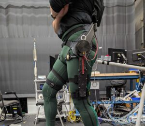
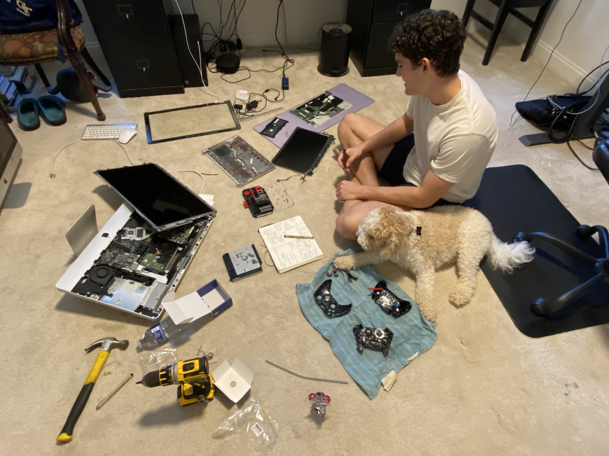
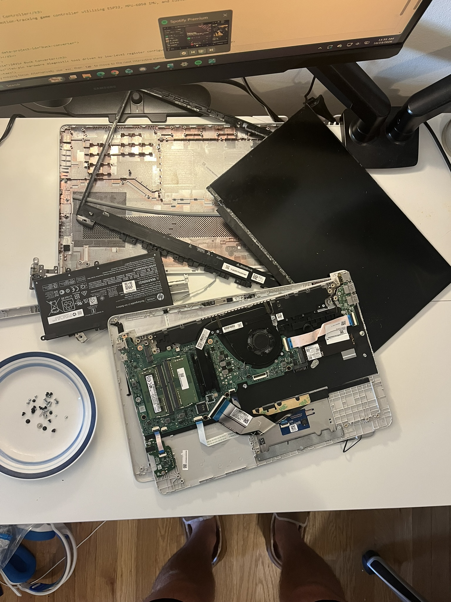
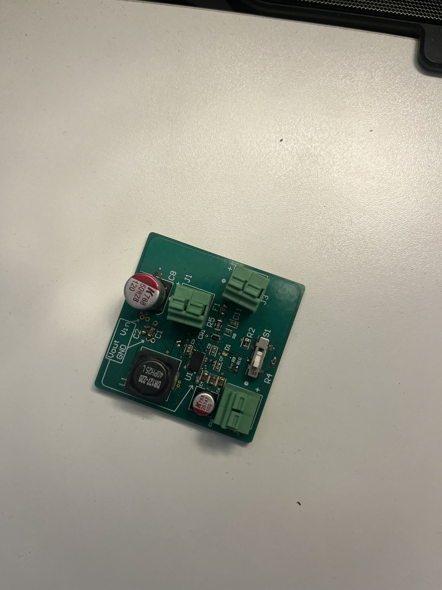
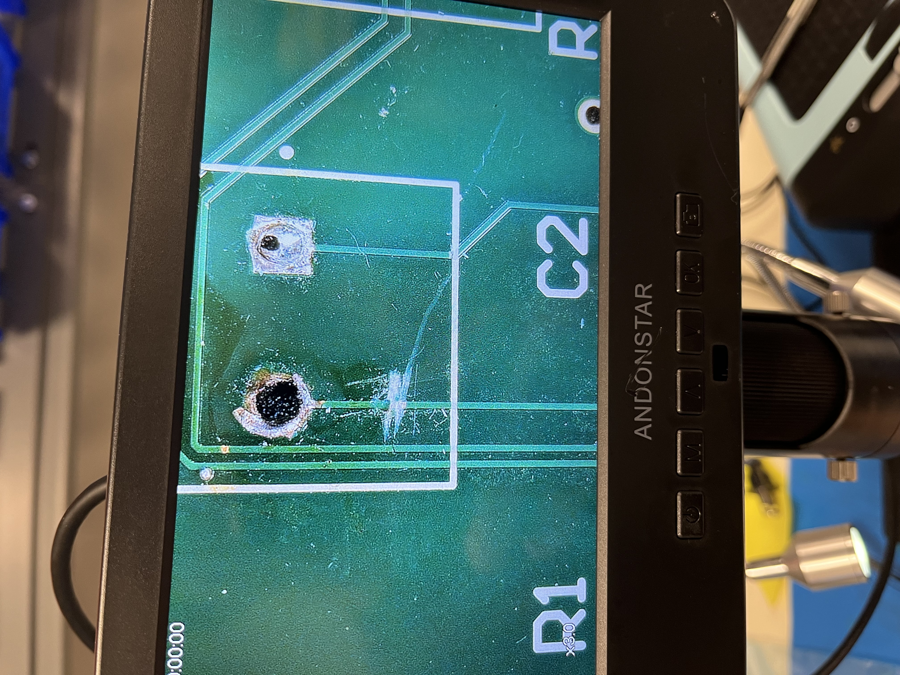
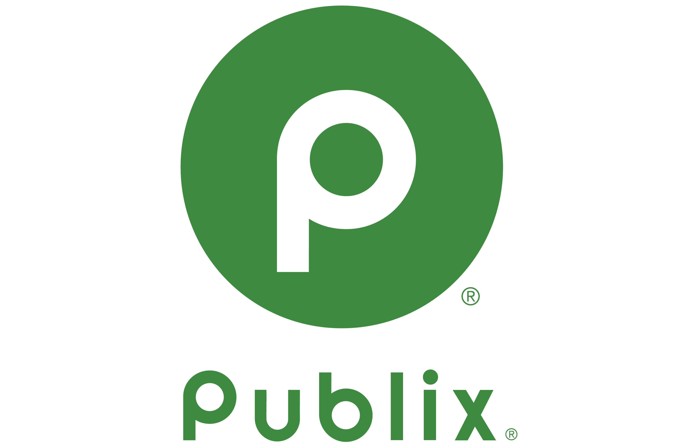

Hi, I'm Gentry
Pronounced:


To steal a phrase from an MIT PCB design OpenCourseWare course I did: I love the art and science of engineering.
In my mind, the science of engineering is how you build something - the math and physics you harness to make something that gets the job done.
The art of engineering is why you build it - it's the satisfaction of making something that's elegant, and intuitive, and cool.
I chose EE because I love both... and because I'm a big DIY guy and I wanted to be able to do more stuff.
With that, I've really enjoyed working on embedded systems: taking projects from idea to prototype, seeing them in action, and then improving them.
Through those projects, I've done a good bit of PCBAs, sensor fusion, and controls - and I'm always looking to build on those and learn new skills/applications.
I want to work on things that make the world a better place. That's pretty intentionally open-ended, but I'll add that I've been particularly interested in bionics, robotics, and wearables.
My favorite past times are over-optimizing my life and doing just about anything with my friends and family. Below you'll see a bit more about my life.

I'm the oldest (and therefore best) of 5 kids with a great mom. We're a pretty tight knit family, and we spend a lot of time playing, chatting, and giving each other a hard time. We're all soccer players of varying levels and this is us at an Atlanta summer series game for my favorite team: Manchester United.

I love any sort've game - board games, outdoor games, video games, or what have you. I especially love random games like this one: Ultimate Banana. It's like ultimate frisbee but with bananas. It's really silly and fun. The kid in the green shirt is my best friend, Pierce.

I love reading. From fiction to philosophy, self-help through science and psychology; I love experiencing new worlds, new perspectives; I love learning and growing. I imagine I'm one of the only kids of my generation to get grounded for reading too much.
GPA: 3.7
Concentrations: Robotics & Autonomous Systems; Circuit Technology
GPA: 3.9
Honors Engineering Program

Bringing up a wireless, modular sensing suite to work with exoskeletons.

Recovering memory from a bricked 2011 iMac, general car work, repairing xbox controllers, and a fixing broken speaker.

Taking an old laptop on its last leg and turning it into a wall mounted display for my calendar, to-dos, music, etc.
Wearable motion-tracking game controller utilizing ESP32, MPU-6050 IMU, and custom sensor fusion.

24V input synchronous buck converter to a selectable 3.3V, 5V, or 12V output.

Device that tests continuity and pinout of cable when inserted.

Python program that scrapes Publix BoGo's, filters them, and then exports relevant BoGo's via email.